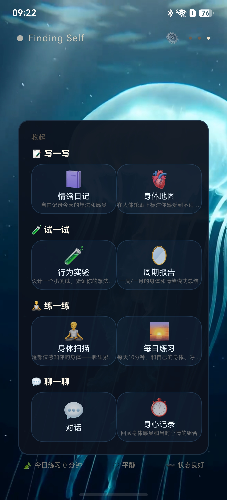
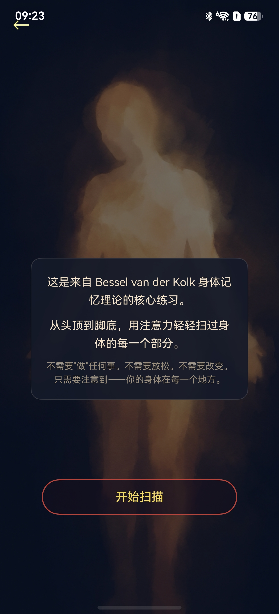
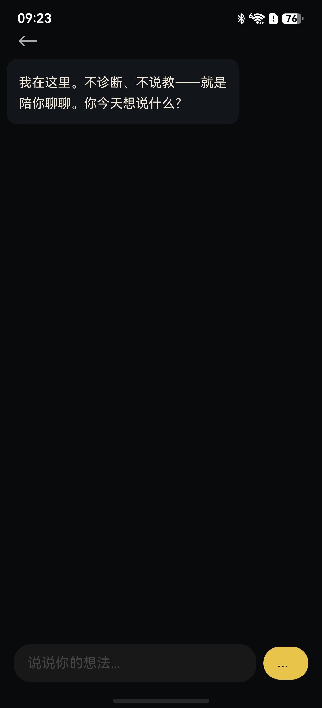
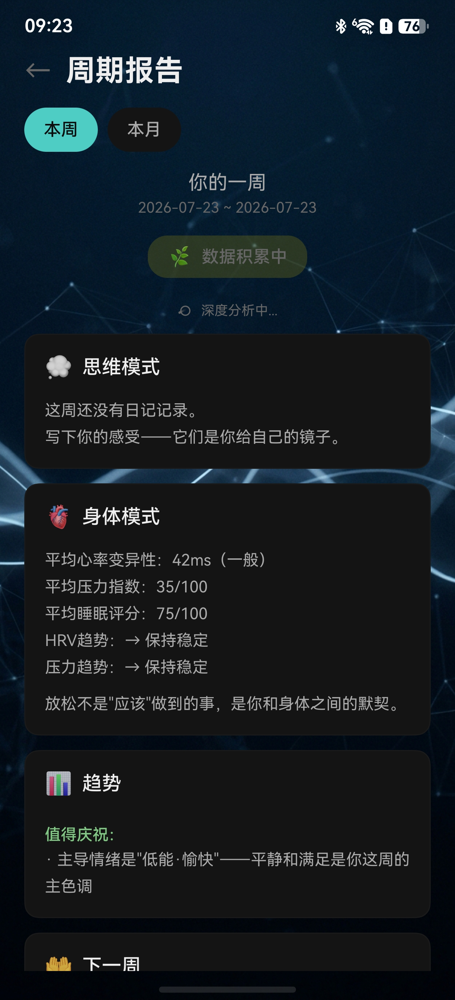
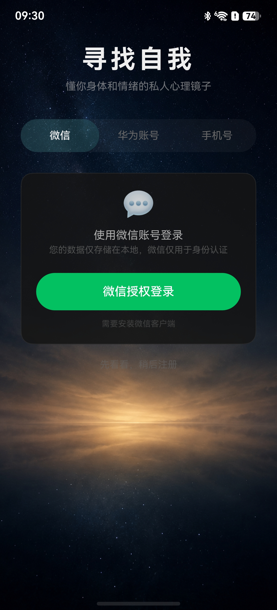

寻找自我是什么
"寻找自我"是一款面向普通用户的情绪记录与自我觉察工具，适用于希望更好地理解自身情绪与身体状态的成年人。 你可以用一句话写下今天的心情，也可以在人体轮廓上标注不适的位置， 或者跟着引导做一次十分钟的身体扫描。
我们相信，被看见的情绪更容易被安放。应用把记录、回顾与练习串成一条完整的路径：
- 记录：情绪日记、语音日记、身体地图，用最轻的方式写下当下的感受。
- 回顾：情绪趋势与周期报告，把零散的记录汇成一段时间里的模式。
- 练习：呼吸引导、身体扫描、行为实验，用可执行的小步骤照顾自己。
- 陪伴：在你需要时，AI 对话可以提供一段共情的回应和梳理思路的提问。
本应用不是医疗器械，也不提供心理诊断或治疗，不能替代专业心理咨询与医疗服务。 若你正处于强烈的痛苦中，请及时联系专业机构或拨打当地心理援助热线。
核心功能
围绕"记录 — 回顾 — 练习"设计，所有功能都可以独立使用。
情绪日记
写下今天发生的事和此刻的感受，也可以直接用语音记录，自动转成文字保存。
情绪轮盘
用轮盘选择当下的情绪与能量状态，让难以言说的感受先有一个落点。
身体地图
在人体轮廓上标注紧张、酸胀或不适的位置，并关联当时的情绪记录。
呼吸引导
跟随呼吸环的节奏练习慢呼吸，可开启提示音与触觉反馈，帮助你回到当下。
身体扫描
从头顶到脚底，用注意力轻轻扫过身体的每个部分，练习觉察而不评判。
AI 对话
由第三方大模型生成的共情回应与提问，帮你把感受说出来、把思路理清楚。
周期报告
把一周或一月的记录汇总成情绪与身体的模式小结，看到自己的变化。
行为实验
设计一个小测试去验证自己的想法，用行动代替反复的自我怀疑。
应用截图
以下为 HarmonyOS 版本的实际界面截图。





AI 生成内容与个人信息说明
关于 AI 生成内容
应用内的 AI 对话、日记 AI 回应与深度报告由第三方大语言模型生成。 相关内容在界面中均带有"AI 生成"标识，仅作为情绪梳理与自我觉察的参考， 不构成医疗、心理或法律建议。
请勿在对话或日记中输入身份证号、银行卡号等敏感个人信息。
重要提示
本应用仅用于个人情绪记录与自我觉察，不提供诊断，不替代专业心理咨询或医疗建议。 如果你出现持续的情绪困扰或身体不适，请及时就医或联系专业的心理服务机构。
联系方式
使用中遇到问题、有建议或需要反馈，欢迎通过以下方式联系我们。
| 应用名称 | 寻找自我（FindingSelf） |
|---|---|
| 开发者 | 李祥（个人开发者） |
| 电子邮箱 | lixiang820822@qq.com |
| 适用系统 | HarmonyOS（华为应用市场） |
| 应用版本 | 1.0.0 |
| 反馈内容 | 功能建议、问题反馈、隐私与数据相关的咨询与投诉 |
我们会在收到反馈后尽快核实处理；涉及个人信息权益的请求，我们将在法律规定的期限内答复。